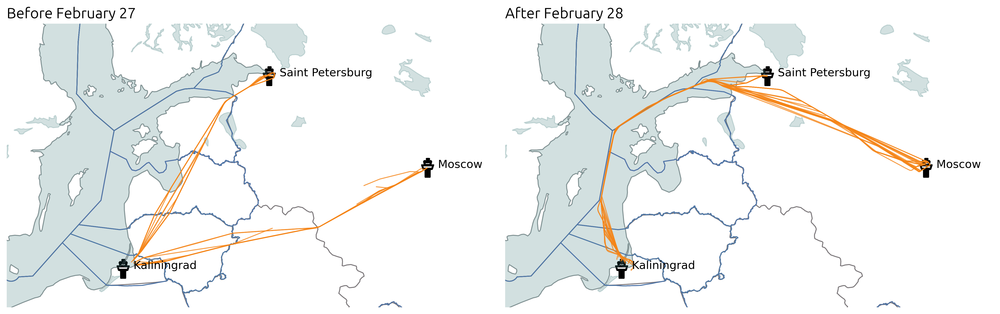

Flying to Kaliningrad during the Russian flight ban
Following the invasion of Ukraine, most European countries banned Russian aircraft from flying their airspace. This raised the question of Kaliningrad exclave being isolated from the rest of the country. It seems that after February 27, commercial flights between mainland Russia and Kaliningrad have been flying on the thin border between Finland, Sweden and Baltic states Flight Information Regions (FIR).
Actually, operations are almost in a “business as usual” situation:
all what is more than 12 nautical miles beyond the coasts is international airspace, the ban only applies within that limit;
flight plans are filed along this thin strip;
air traffic control provide services and keep in constant communication with all aircraft.
from traffic.data import opensky
t = opensky.history(
"2022-02-22",
"2022-03-06",
callsign=[
# Some callsigns between Moscow, Saint Petersburg and Kaliningrad
"AFL1000 ", "AFL1002 ", "AFL1004 ", "AFL1006 ", "AFL1008 ",
"SDM6323 ", "SDM6325 ", "SDM6329 ",
],
)

import matplotlib.pyplot as plt
from cartes.crs import LambertConformal
from cartes.utils.features import countries, lakes, ocean
from traffic.data import eurofirs, airports
fig, ax = plt.subplots(
1, 2, figsize=(15, 6), dpi=300,
subplot_kw=dict(projection=LambertConformal(10, 45)),
)
title_style = dict(loc="left", font="Ubuntu", fontsize=16, fontweight=400)
for ax_ in ax:
ax_.set_extent((15, 40, 54, 60))
ax_.add_feature(countries(scale="50m"))
ax_.add_feature(lakes(scale="50m"))
ax_.add_feature(ocean(scale="50m"))
ax_.spines["geo"].set_visible(False)
for fir in eurofirs:
fir.plot(ax_, color="#4c78a833")
fir.plot(ax_, edgecolor="#4c78a8")
airports["UUEE"].point.plot(ax_, text_kw=dict(s=" Moscow", fontsize=12))
airports["ULLI"].point.plot(ax_, text_kw=dict(s=" Saint Petersburg", fontsize=12))
airports["UMKK"].point.plot(ax_, text_kw=dict(s=" Kaliningrad", fontsize=12))
t.before("2022-02-27").plot(ax[0], color="#f58518")
ax[0].set_title("Before February 27", **title_style)
t.after("2022-02-28").plot(ax[1], color="#f58518")
ax[1].set_title("After February 28", **title_style)
fig.set_tight_layout(True)